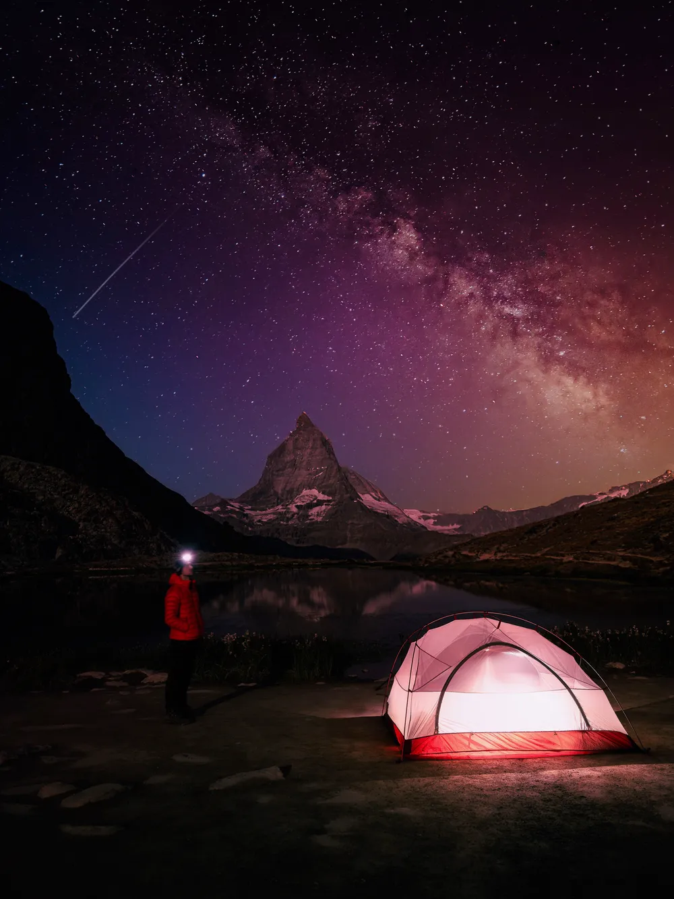
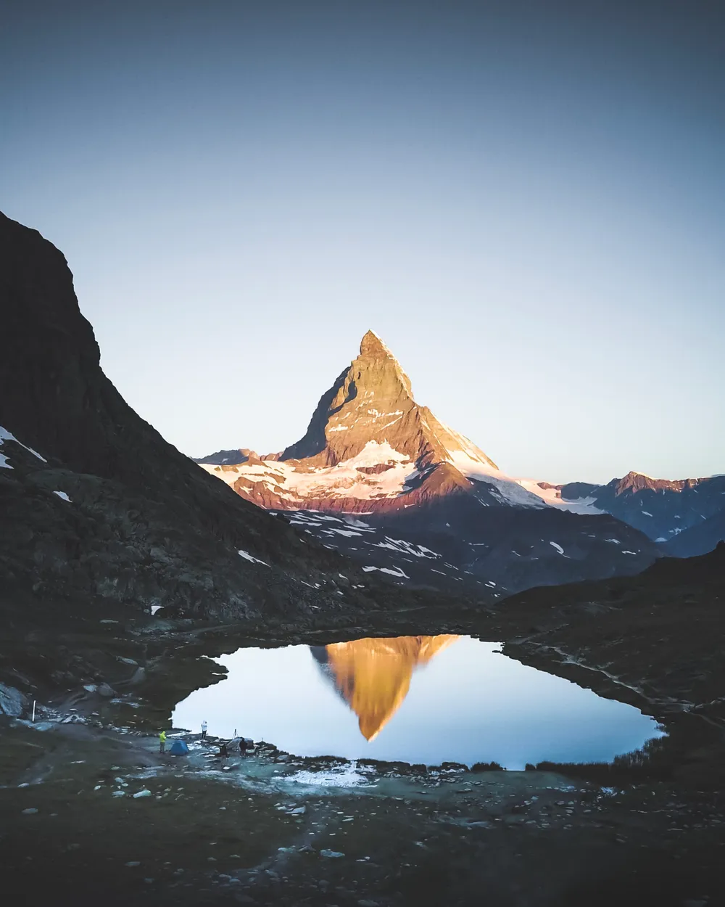
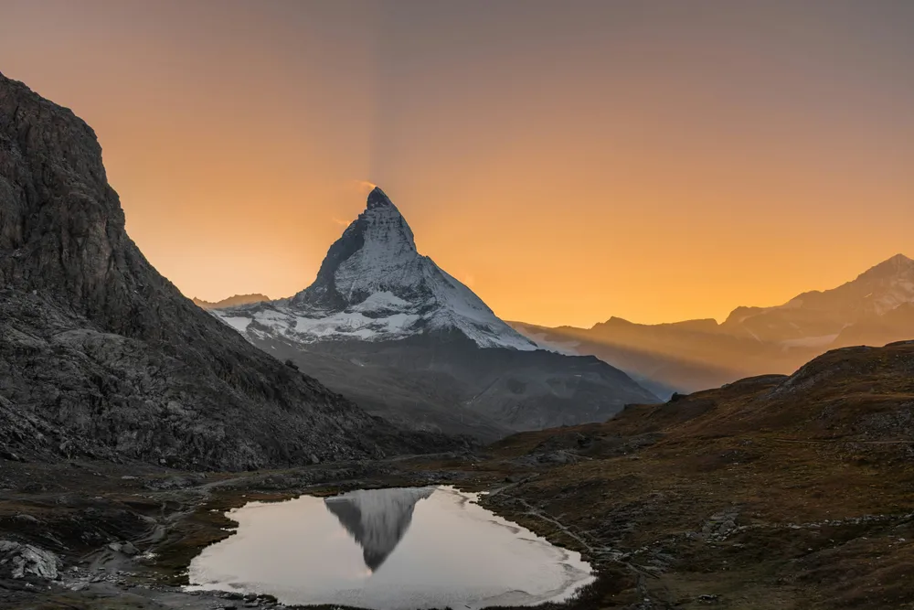
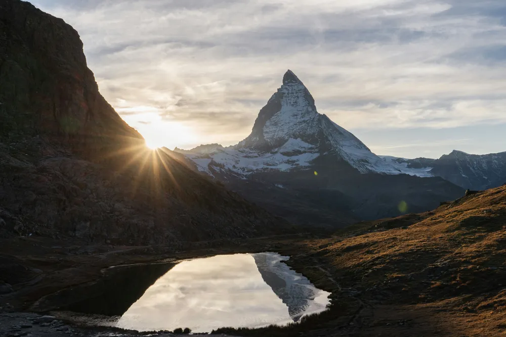
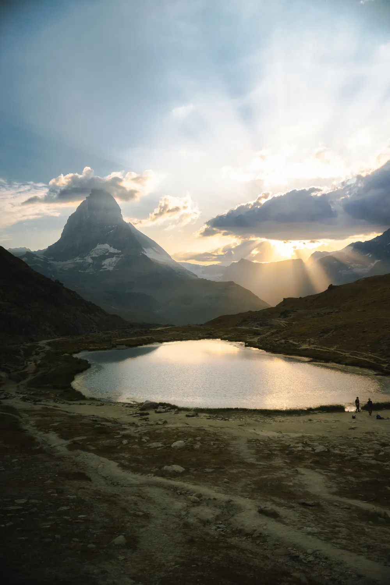
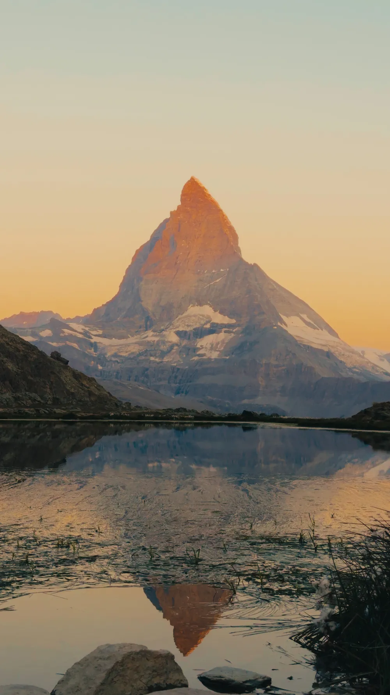
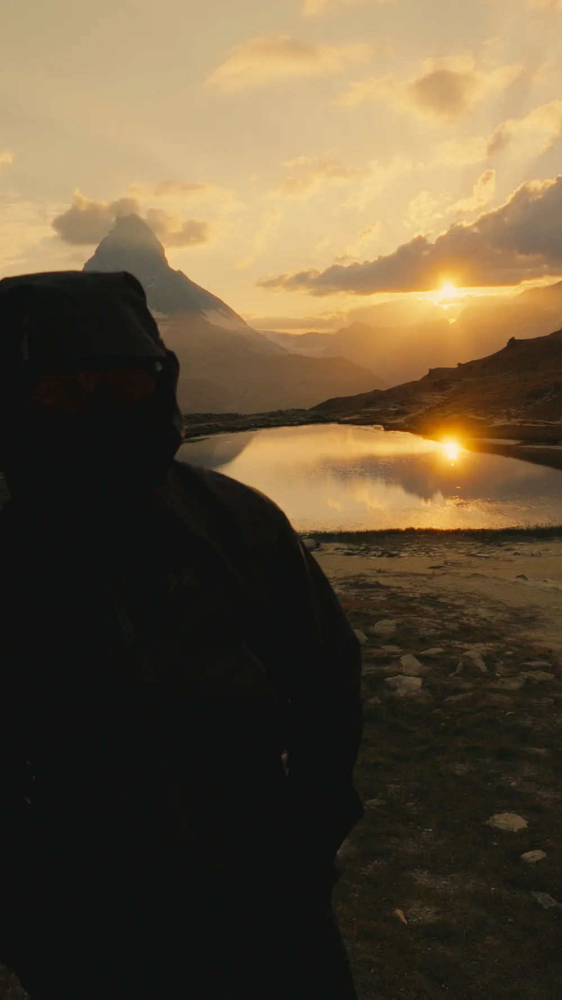
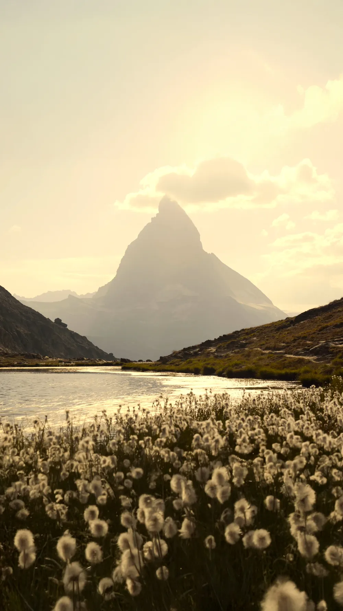
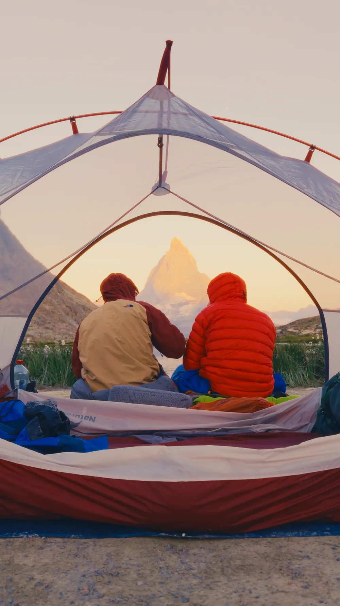

1 / 10 Photo · @leon.helgLAKES
Riffelsee
The Matterhorn, doubled. At first light the tip turns red before the rest of the mountain catches up.
RegionZermatt, Valais
AccessGornergrat Bahn
EffortEasy
Best lightSunrise